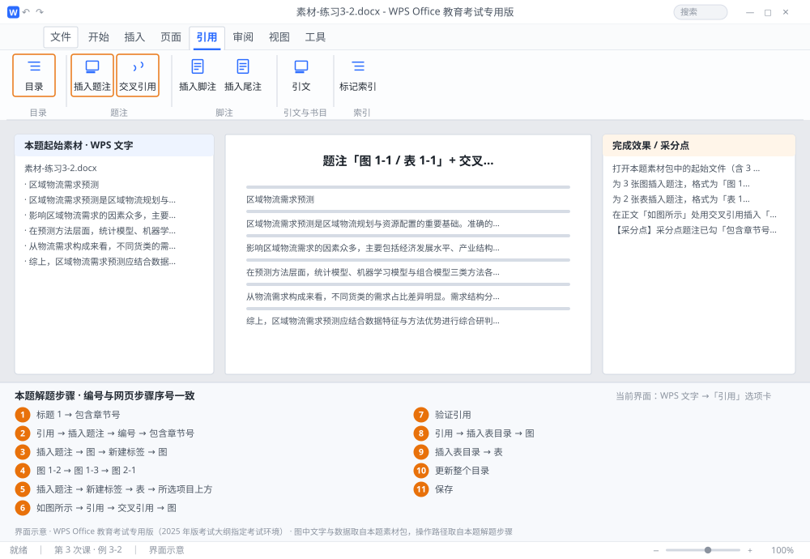

完成比对文档 · 例 3-2
题注「图 1-1 / 表 1-1」+ 交叉引用 + 图目录与表目录 ｜ 第 3 次课 / WPS 文字 ｜ 网页：实操-文字3.html ｜ 考试环境：WPS Office 教育考试专用版（2025 年版考试大纲指定考试环境）
用途 本页按修订后的题目要求与解题步骤生成，是交卷自查的结果基准：
逐项列出每一步应出现的可复核结果，配合模拟操作截图与解题结果文件使用。
它不是素材包的一部分，不会预置答案动作；起始素材仍从本题素材包下载。
一、本题起始素材包
目录：练习素材/练习3-2-题注与交叉引用/ ｜
下载包：练习素材/下载/练习3-2-题注与交叉引用.zip
图1-货运量变化趋势.png图2-预测准确率对比.png图3-需求货类结构.png素材-练习3-2.docx素材说明.txt
二、题目要求
- 打开本题素材包中的起始文件（含 3 张图、2 张表，正文中有「如图所示」「见下表」等表述）。
- 为 3 张图插入题注，格式为「图 1-1」（包含章节号，分隔符「-」），位置在图片下方。
- 为 2 张表插入题注，格式为「表 1-1」，位置在表格上方。
- 在正文「如图所示」处用交叉引用插入「图 1-1」（引用内容：只有标签和编号）。
- 在文末分别生成图目录与表目录。
- 保存为 学号-姓名-练习3-2.docx。
三、解题步骤（编号与下方核对表、截图编号一致）
- 打开本题素材包中的起始文件。确认第 1 章的标题已套用「标题 1」——「包含章节号」靠它取章号。
- 设题注编号规则。「引用」→「插入题注」→ 点「编号」→ 勾选「包含章节号」→ 章节起始样式选「标题 1」→ 分隔符选「-（连字符）」→ 确定。
- 插图题注。选中第 1 张图 →「插入题注」→ 标签选「图」（没有就「新建标签」输入「图」）→ 位置「所选项目下方」→ 确定，题注自动为「图 1-1」。
- 其余两张图。重复上面的操作，自动生成「图 1-2」「图 1-3」；若某张在第 2 章，会自动变成「图 2-1」。
- 插表题注。选中第 1 张表 →「插入题注」→ 先「新建标签」输入「表」→ 位置「所选项目上方」→ 确定；第 2 张表重复。
- 插交叉引用。光标放到「如图所示」后面 →「引用」→「交叉引用」→ 引用类型「图」→ 引用内容「只有标签和编号」→ 在列表里选「图 1-1」→ 插入 → 关闭。
- 验证引用。按住 Ctrl 单击该引用，应能跳到图 1-1 所在位置。
- 生成图目录。光标移到文末 →「引用」→「插入表目录」→ 题注标签选「图」→ 确定。
- 生成表目录。光标移到图目录之后 → 再「插入表目录」→ 题注标签选「表」→ 确定。
- 更新全部域。Ctrl+A → F9 → 若有对话框选「更新整个目录」。
- 保存。保存为 学号-姓名-练习3-2.docx。
四、完成效果 / 采分点
采分点题注已勾「包含章节号」且分隔符为「-」 · 图题注在下方、表题注在上方 · 3 个图题注 + 2 个表题注编号连续正确 · 交叉引用为域（可跳转） · 已生成图目录与表目录两份
五、逐项完成核对表
| 步骤 | 关键操作路径 | 应出现的结果（可复核） |
|---|
| 1 | 打开本题素材包中的起始文件 | 「标题 1」、「包含章节号」 |
| 2 | 设题注编号规则 | 「引用」、「插入题注」、「编号」、「包含章节号」、「标题 1」 |
| 3 | 插图题注 | 1 张、「插入题注」、「图」、「新建标签」、「所选项目下方」 |
| 4 | 其余两张图 | 「图 1-2」、「图 1-3」、「图 2-1」 |
| 5 | 插表题注 | 1 张、「插入题注」、「新建标签」、「表」、「所选项目上方」 |
| 6 | 插交叉引用 | 「如图所示」、「引用」、「交叉引用」、「图」、「只有标签和编号」 |
| 7 | 验证引用 | 验证引用 |
| 8 | 生成图目录 | 「引用」、「插入表目录」、「图」 |
| 9 | 生成表目录 | 「插入表目录」、「表」 |
| 10 | 更新全部域 | F9、「更新整个目录」 |
| 11 | 保存 | 学号-姓名-练习3-2.docx |
六、模拟操作截图

界面示意 · WPS Office 教育考试专用版 · 橙色编号与本题解题步骤序号一致；
图中文字与数据取自本题素材包，功能入口取自本题解题步骤。
核对方法：按网页解题步骤完成并另存自己的成稿后，逐行比对本表第 3 列的
参数、公式、区域、文件名与对象数量；再对照网页「完成效果 / 采分点」检查版式是否一致。